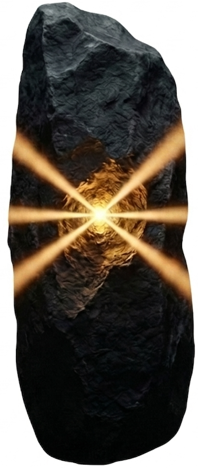
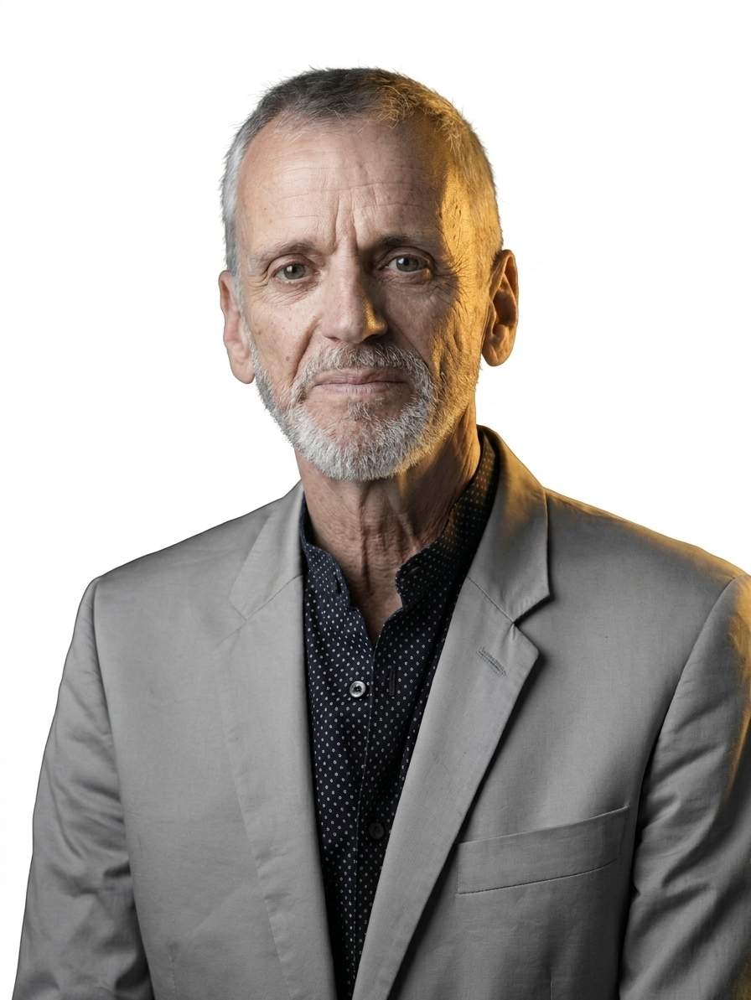

A Think Smart Service
RADICAL REALITY CHECK
Sechs Perspektiven. Für strategische Entscheidungen.
Intensivcoaching für Menschen an Wendepunkten.
Du stehst vor einer bedeutenden Richtungsentscheidung in deinem Leben? Wähle dafür die weltbesten Mentoren zu deiner Unterstützung. Betrachte deine Situation und deine Möglichkeiten von allen Seiten. Ohne blinde Flecken einer einzelnen Person. Damit du fundiert und klug über deinen weiteren Weg entscheidest.
Sechs Mentoren. Ein Ziel. Deine Klarheit für den Weg.
Der Radical Reality Check ist ein mehrstufiges KI-Coaching. Du wählst dein eigenes "Experten-Komitee": fünf virtuelle Profile, radikal unterschiedlich, ohne Filter. Ich* als sechster Coach moderiere, dokumentiere und erde die Ideen. Ich bin dein Bindeglied in den Kreis. Wir konfrontieren dich so lange, bis dein nächster Schritt offensichtlich wird.
Was die KI leistet
Was traditionelles Coaching nicht kann:
01 / 360°-Perspektive – Statt einer Meinung bekommst du ein volles Spektrum. Du wählst, was Sinn macht.
02 / Schonungslose Ehrlichkeit – Das System wird dir den Spiegel vorhalten. Es wird dir Fragen stellen, die sich Freunde und Kollegen nicht trauen zu stellen.
03 / Ständige Iteration – Gleichzeitig sind diese Coaches bereit, jederzeit Irrtümer und Fehldiagnosen einzugestehen. Neue Daten, neue Lesart.
„Die Stärke der KI liegt nicht in der Unfehlbarkeit. Sie liegt darin, sich selbst so radikal zu korrigieren, bis die Wahrheit des Klienten sichtbar wird."
Für wen. Und wie es funktioniert.
Für Menschen und Führungskräfte an einem Wendepunkt (Wachstum, Gründung, Neuausrichtung oder tiefer Wandel), die nicht nach einem Schulterklopfen suchen, sondern nach tiefen, schonungslosen Gegenfragen.
In vier Schritten zur Klarheit:
01 Feldanalyse – Komplette Erfassung deines Umfelds und der Dynamiken, in denen du dich bewegst.
02 Dein Experten-Team – Du wählst 5 KI-Persönlichkeiten, diese werden nach 7 Diversitätsachsen kalibriert.
03 Iterative Dynamik – 3 bis 4 Runden. In jeder Runde: Konfrontation, Synthese, weiterführende Fragen.
04 Dein Ergebnis – Ein klarer Aktionsplan für dein weiteres Vorgehen.
Dein Resultat – was du mitnimmst:
- Eine Diagnose, hinter der du zu 100 % stehst.
- Ein praxisnaher Plan, den du selbst umsetzen kannst.
- Die gereifte Klarheit, um deine Entscheidung anderen zu kommunizieren.

*Dein sechster Coach: Rolf Schneidereit
Seit vielen Jahren begleite ich Menschen und Organisationen durch Veränderungen. Meist geht es dabei um komplexe Entscheidungen. Seit 2008 forciere ich in Prozessen die kollektive Intelligenz. Mit Formaten, die die persönlichen Aspekte mit den sachlich-fachlichen verbinden. Denn nachhaltig wird Erfolg dann, wenn wir handfeste Ergebnisse mit sichereren Beziehungen verbinden.
Im Radical Reality Check bin ich dein sechster Coach – derjenige, der das Experten-Komitee moderiert, die Synthese hält und dafür sorgt, dass am Ende nicht ein abstrakter Report steht, sondern ein Aktionsplan, den du überzeugt in die Hand nimmst.
Setz deinen Kurs!
Starte mit der Feldanalyse. Dann fordern dich sechs Expertenstimmen durch drei bis vier intensive Runden heraus. Bis deine Richtung steht.
E-Mail senden
Rolf Schneidereit
Think Smart Coaching
hello@think-smart.io
Think Smart Coaching
hello@think-smart.io